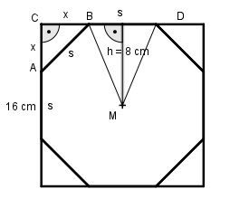

Aufgabe 212 Aus einem quadratischen Blech mit einer Seitenlänge von 16 cm soll an den Ecken ein Achteck geschnitten werden. Wie groß ist dessen Fläche A?

Satz von Pythagoras im Dreieck ABC: s2 = x2 + x2 = 2 * x2 |√ s = x * √2 |:√2 s x = ---- √2 s 16 = s + 2 * ---- √2 16 = s + s * √2 16 = s( 1 + √2) |(1 + √2) 16 s = --------- = 6,6 cm 1 + √2 a = 6 * Teildreieck BMD 8 cm * 6,6 cm A = 8 * ----------------- = 211,2 cm2 2